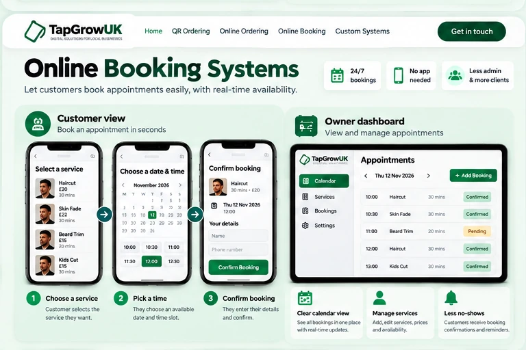

Online Booking Systems
A cleaner way for customers to book appointments without needing to message or call every time.
From customer to business — at a glance
Choose a service → pick a time → submit the booking.

Click the image to open a larger view.
Example appointment screens and business calendar. Actual booking rules and confirmation features depend on the setup.
How it can help your business
A booking page lets customers see your services and available times online. They can choose what they want, pick a slot and submit the booking details, giving your business a more organised booking flow.
How it works
Customer opens the booking page
They reach your booking system from Google, social media or a QR code.
Available onlineThey choose a service and time
They pick what they want and select a suitable appointment slot.
Quick selectionYou manage the booking
The booking is recorded for your team to manage based on the agreed setup.
More organisedBuilt around your business
We can discuss service options, how long appointments take, which times are available, and what details you want from customers before building the right setup for your business.
Can customers book from their phone?
Yes. The booking page is designed to be simple and mobile-friendly.
Can the system match my services?
Yes. The service list and workflow are based on your business.